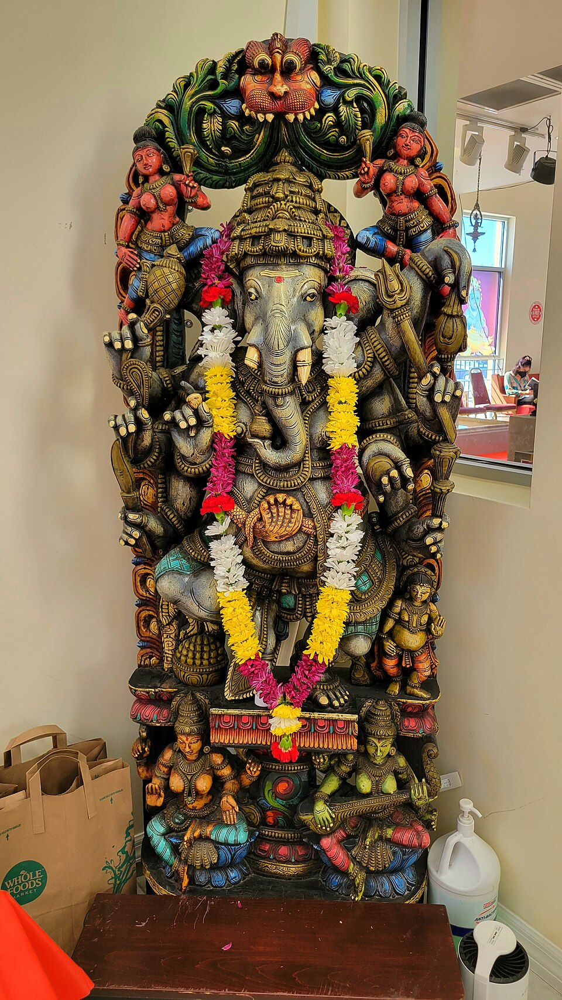
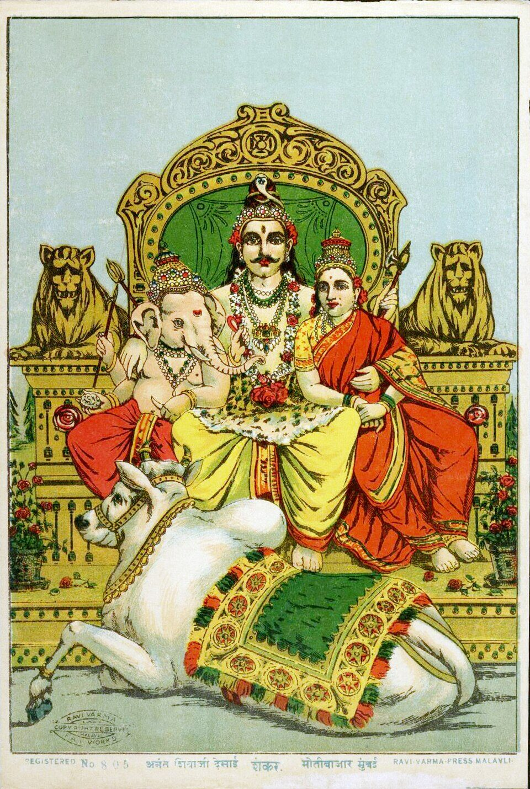
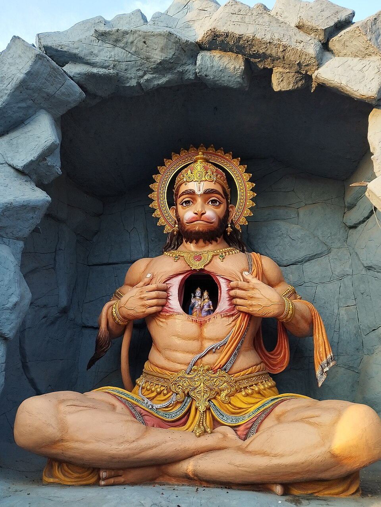
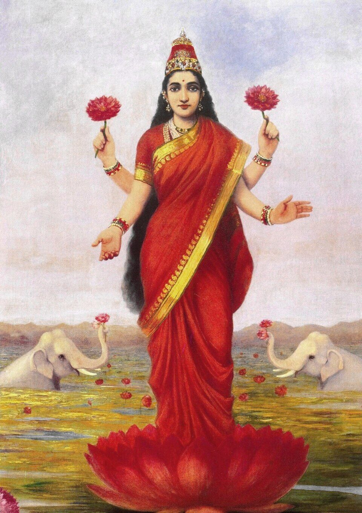

Krishna lifts Govardhan Hill
The people of Vrindavan prepared their yearly offering to Indra, king of the heavens. Young Krishna asked his father: why do we wo…

Ganesha writes the Mahabharata
The sage Vyasa had composed the Mahabharata in his mind - a hundred thousand verses - and needed a scribe equal to the task. Ganes…

Shiva drinks the poison
To win the nectar of immortality, the gods and demons churned the ocean of milk together, with a mountain as the churn and the ser…

The child Hanuman leaps for the sun
When Hanuman was a child, he woke one morning hungry and saw the rising sun - red and golden as a ripe fruit. Wanting to taste it,…

Lakshmi rises from the ocean of milk
Once, the gods had lost their fortune. A sage's curse had withered their strength, and Lakshmi - prosperity itself - had withdrawn…

Rama accepts fourteen years of exile
On the morning Rama was to be crowned king of Ayodhya, his stepmother Kaikeyi called in two old boons owed to her by the king: her…
Retellings of well-known stories from the Puranas and epics, in our own words. Sources noted on each story. Artwork: Raja Ravi Varma and the Ravi Varma Press, public domain.